Rysunek:
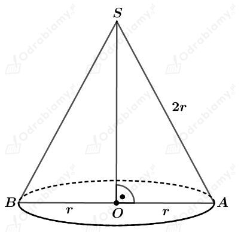
Wyznaczmy pole powierzchni bocznej tego stożka. Mamy:
Wyznaczmy pole powierzchni podstawy tego stożka. Mamy:
Zauważmy, że
Uzasadniliśmy, że pole powierzchni bocznej tego stożka jest dwa razy większe od pola jego podstawy.
co kończy dowód.
Rysunek:
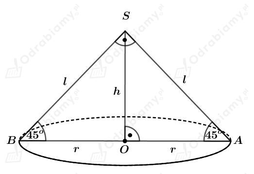
Przekrój tego stożka jest trójkątem prostokątnym o polu równym 32 cm2. Mamy stąd:
Skoro trójkąt BAS jest trójkątem prostokątnym równoramienny, to
czyli
oraz również
Na tym stożku opisano graniastosłup prawidłowy czworokątny o krawędzi podstawy długości 2r i wysokości długości h.
Wyznaczmy objętość tego graniastosłupa. Mam:
Dany jest graniastosłup prawidłowy czworokątny.
Przekrój płaszczyzną zawierającą przekątne podstaw jest kwadratem o boku długości 5.
Rysunek:
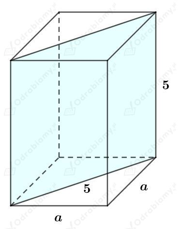
Korzystając ze wzoru na długość przekątnej kwadratu mamy:
W podany graniastosłup wpisano stożek. Niech r będzie długością promienia podstawy tego stożka, a h długością jego wysokości. Zauważmy, że
oraz
Wyznaczmy objętość tego stożka. Mamy:
Dany jest stożek o wysokości długości h i promieniu podstawy długości 6.
W podany stożek wpisano graniastosłup prawidłowy czworokątny o krawędzi podstawy długości a i wysokości długości c.
Naszkicujmy przekrój przechodzący przez przekątną podstawy tego graniastosłupa. Mamy:
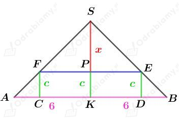
Wiemy, że pole powierzchni podstawy tego graniastosłupa jest równe 18. Mamy stąd:
więc
Zatem
Wiemy, że przekątna graniastosłupa ma długość 2√13. Korzystając ze wzoru na długość przekątnej graniastosłupa mamy:
Korzystając z podobieństwa trójkątów KBS i PES mamy:
Wyznaczmy długość wysokości h tego stożka. Mamy:
Wyznaczmy objętość tego stożka. Mamy:
Naszkicujmy bryły oraz przekrój stożka:
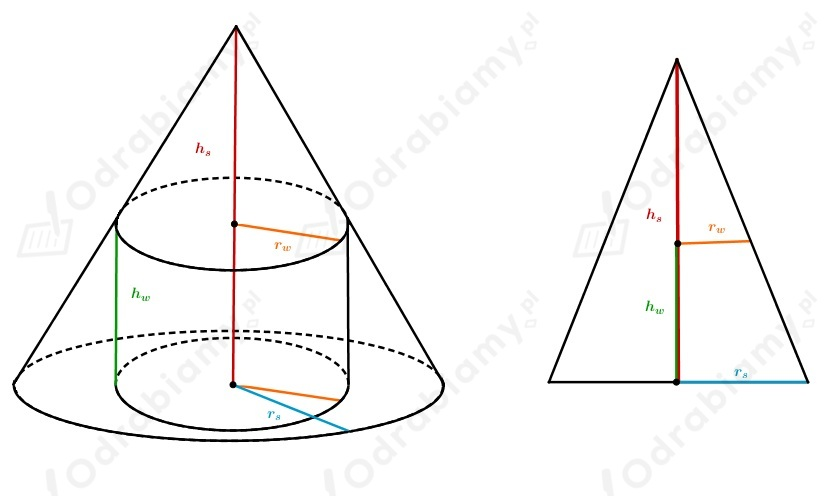
Przyjmijmy oznaczenia:
rs - promień stożka
rw - promień walca
hs - wysokość stożka
hw - wysokość walca
Z treści zadania wiemy, że
oraz
Korzystając z podobieństwa trójkątów otrzymujemy:
Wyznaczmy objętość tego stożka. Mamy:
Wyznaczmy objętość tego walca. Mamy:
Wyznaczmy stosunek objętości tego walca do objętości tego stożka. Mamy:
Objętość tego walca stanowi 3/8 objętości tego stożka.
Dana jest kula o środku w punkcie O promieniu długości R.
W podaną kulę wpisano stożek o promieniu podstawy długości r i wysokości długości 4.
Rysunek:
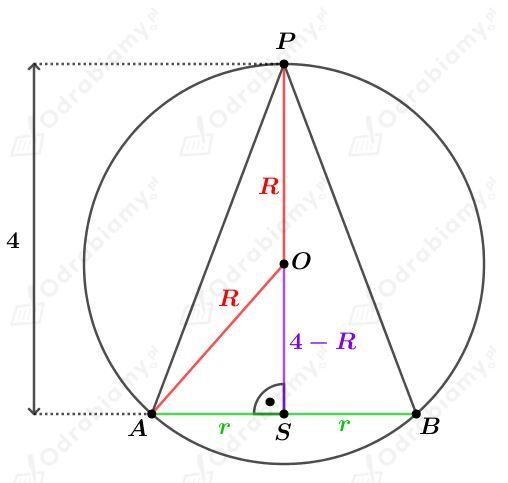
Korzystając z twierdzenia Pitagorasa dla trójkąta ASO otrzymujemy:
Z treści zadania wiemy, że objętość tego stożka jest czterokrotnie większa od objętości tej kuli. Mamy stąd:
Długość promienia kuli wynosi 4 lub 2√5-2.
Wyznaczmy pole trójkąta ABP. Mamy:
Wyznaczmy pole trójkąta ABP. Mamy:
Rysunek:
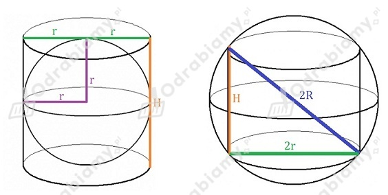
Obliczmy objętość kuli wpisanej w ten walec. Mamy:
Zauważmy, że
Obliczmy długość promienia kuli opisanej na tym walcu. Korzystając z twierdzenia Pitagorasa mamy:
Obliczmy objętość kuli opisanej na tym walcu. Mamy:
Wyznaczmy stosunek objętości kuli wpisanej w ten walec do kuli na nim opisanej. Mamy:
Narysujmy przekrój oraz stożek wpisany w kulę. Mamy:
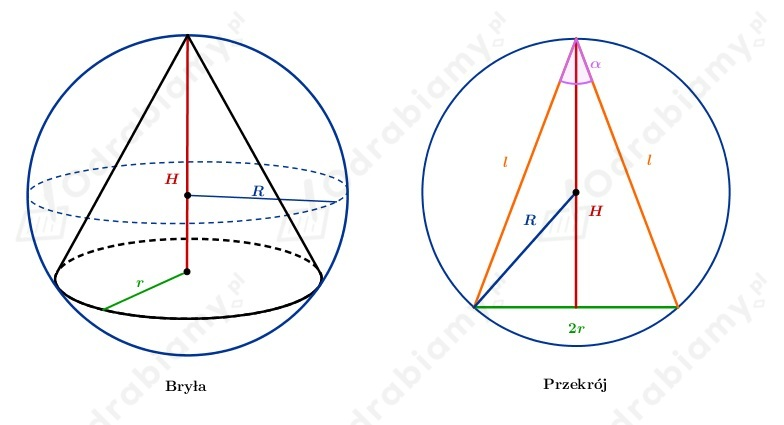
Zauważmy, że promień okręgu opisanego na trójkącie będącym przekrojem stożka jest równy promieniowi kuli opisanej na tym stożku.
Wyznaczmy sinus kąta 𝛼. Mamy:
Dodatkowo zauważmy, że pole przekroju to
Ale z drugiej strony również jest równe
Zatem otrzymujemy równanie:
Otrzymaliśmy długość promienia kuli opisanej na stożku.
Niech x będzie długością promienia okręgu wpisanego w trójkąt będącym przekrojem stożka.
Zauważmy, że długość promienia okręgu jest równa długości promienia kuli wpisanej w ten stożek.
Rysunek:
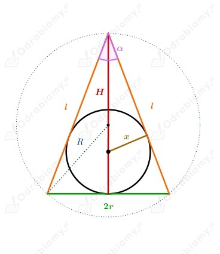
Wyznaczmy sinus kąta 𝛼. Mamy:
Pole przekroju jest równe
Można je policzyć także wykorzystując promień kuli wpisanej w stożek.
Otrzymaliśmy równanie
Otrzymaliśmy długość promienia kuli wpisanej w stożek.
Obliczmy stosunek objętości kuli wpisanej w ten stożek do objętości kuli na nim opisanej. Mamy:
Dany jest ostrosłup prawidłowy sześciokątny. Rysunek:
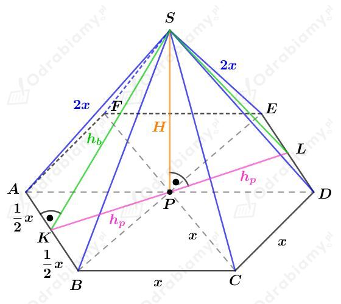
a)
Na tym ostrosłupie opisano kulę o promieniu długości R.
Rozważmy trójkąt ADS. Długość promienia R jest równa długości promienia okręgu opisanego na tym trójkącie.
Zauważmy, że trójkąt ADS jest trójkątem równobocznym. Zatem długość promienia R stanowi 2/3 długości wysokości tego trójkąta. Mamy stąd:
b)
W ten ostrosłup wpisano kulę o promieniu długości R.
Rozważmy trójkąt KLS. Rysunek:
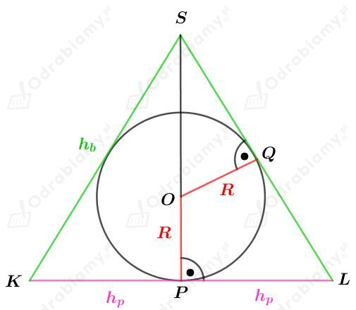
Zauważmy, że
oraz
Korzystając z twierdzenia Pitagorasa dla trójkąta KBS mamy:
Korzystając z podobieństwa trójkątów OGS i LPS otrzymujemy:
Dana jest kula o środku w punkcie O i promieniu długości R.
W daną kulę wpisano walec o promieniu długości 3/5R. Zatem średnica podstawy tego walca ma długość 6/5R.
Rysunek:
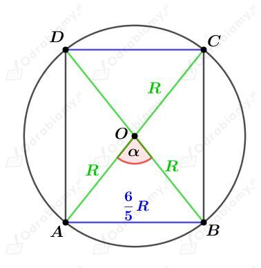
Kąt 𝛼 jest kątem, pod którym ze środka kuli widać średnicę podstawy tego walca.
Korzystając z twierdzenia cosinusów dla trójkąta ABO otrzymujemy:
Wyznaczmy sinus kąta 𝛼. Korzystając z jedynki trygonometrycznej mamy:
W kulę o promieniu długości R wpinano stożek o wysokości długości H.
Rysunek:
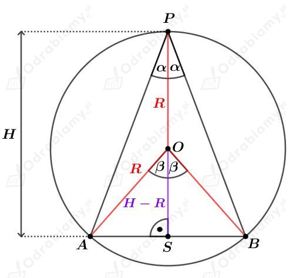
Korzystając ze związku między kątem środkowym i wpisanym opartym na tym samym łuku mamy:
Wyznaczmy cosinus kąta rozwarcia stożka. Mamy:
Dana jest kula o środku w punkcie O i promieniu długości R.
W daną kulę wpisano stożek o promieniu podstawy długości 2R i wysokości długości H.
Rysunek:
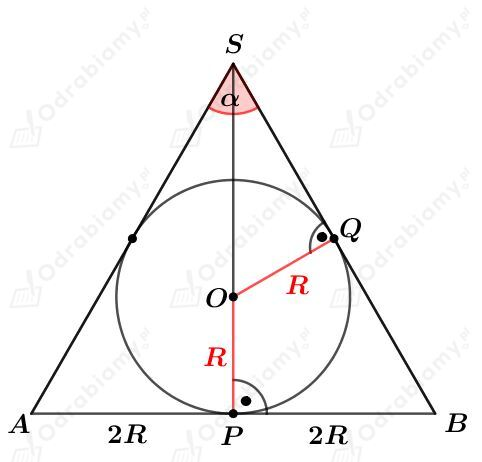
Korzystając z twierdzenia Pitagorasa dla trójkąta PBS otrzymujemy:
Korzystając z podobieństwa trójkątów PBS i QOS otrzymujemy:
Obie strony równania są dodatnie, bo H>R, więc:
Rozważmy trójkąt prostokątny OQS. Wyznaczmy sinus kąta 𝛼/2. Mamy:
Wyznaczmy cosinus kąta 𝛼. Korzystając ze wzoru na cosinus podwojonego kąta mamy: